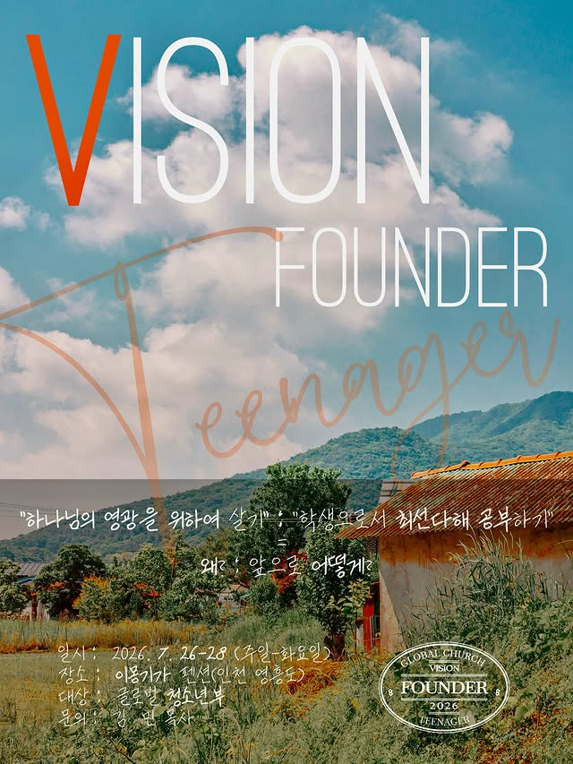
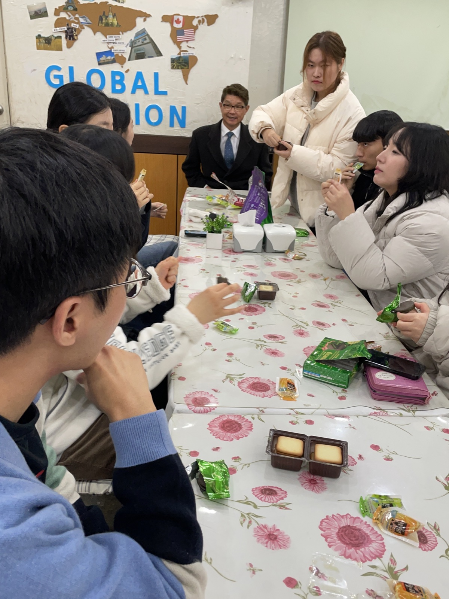
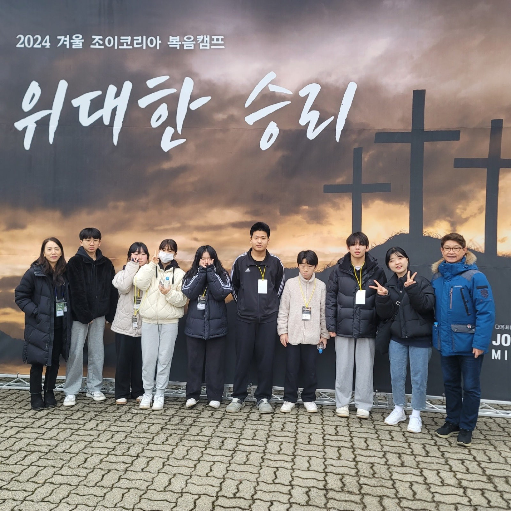
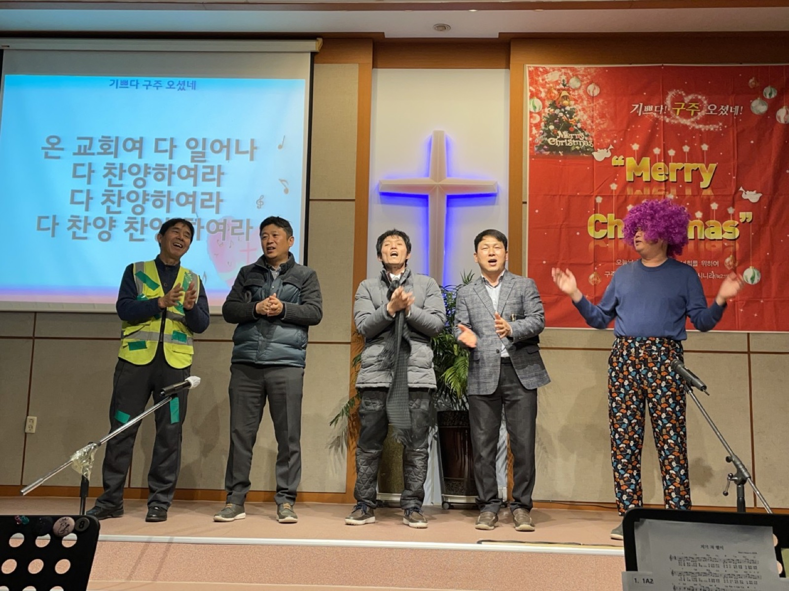

지유쓰 · 청년부
우리 안에 비전을 세우는
비전파운더
삶의 목적과 하나님의 뜻을 함께 묻고, 우리 안에 주신 비전을 발견해 가는 3일의 기록입니다.
지유쓰 · 청년부
삶의 목적과 하나님의 뜻을 함께 묻고, 우리 안에 주신 비전을 발견해 가는 3일의 기록입니다.

다음 세대

청년대학부

다음 세대

셀 공동체
현재 데모에는 네이버 카페와 부교역자 인스타그램에 공개된 기록을 사용했습니다. 실제 운영 시 관리자가 같은 형식으로 이야기를 계속 추가할 수 있습니다.
이번 주 공동체 소식도 궁금하다면
주보와 소식 보기